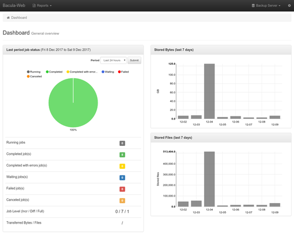

Bacula-Web
Dieser Artikel wurde für die folgenden Ubuntu-Versionen getestet:
Dieser Artikel ist mit keiner aktuell unterstützten Ubuntu-Version getestet! Bitte diesen Artikel testen und das getestet-Tag entsprechend anpassen.
Artikel für fortgeschrittene Anwender
Dieser Artikel erfordert mehr Erfahrung im Umgang mit Linux und ist daher nur für fortgeschrittene Benutzer gedacht.
Zum Verständnis dieses Artikels sind folgende Seiten hilfreich:
Zum Abschluss der Artikelreihe zu Bacula wird hier noch gezeigt, wie man Bacula-Web  installiert. Bacula-Web bietet eine Weboberfläche, mit der man auf statistische Bacula-Daten (Jobs, Pools, Clients, etc.) zugreifen und damit z.B. Fehlfunktionen frühzeitig erkennen kann.
installiert. Bacula-Web bietet eine Weboberfläche, mit der man auf statistische Bacula-Daten (Jobs, Pools, Clients, etc.) zugreifen und damit z.B. Fehlfunktionen frühzeitig erkennen kann.
Eine Änderung der Daten ist nicht möglich (z.B. das Anlegen neuer Clients oder Jobs). Es wird ausschließlich lesend auf die Bacula-Datenbank zugegriffen.
Voraussetzungen¶
Bacula-Web benötigt einen Webserver mit PHP. Als Webserver sind Apache oder nginx geeignet. Weitere Informationen sind den genannten Artikel zu entnehmen.
Installation¶
Zuerst muss Bacula-Web über die Projektseite  heruntergeladen werden. Die Archivdatei, z.B. bacula-web.5.2.12.tar.gz, muss anschließend entpackt [1] und ins "document root" des Webservers kopiert werden [2][3]:
heruntergeladen werden. Die Archivdatei, z.B. bacula-web.5.2.12.tar.gz, muss anschließend entpackt [1] und ins "document root" des Webservers kopiert werden [2][3]:
sudo mkdir /var/www/bacula-web sudo tar xvf bacula-web.5.2.12.tar.gz -C /var/www/bacula-web/
Dann die Rechte anpassen:
cd /var/www/bacula-web
sudo chown -R www-data:www-data ./
sudo find . -type d -exec chmod 755 {} \;
sudo find . -type f -exec chmod 644 {} \;
sudo chmod ug+w ./application/view/cache Ab Version 8.0.0 von Bacula-Web muss noch die PHP-Erweiterung composer installiert werden:
composer
 mit apturl
mit apturl
Paketliste zum Kopieren:
sudo apt-get install composer
sudo aptitude install composer
Konfiguration¶
Die Konfiguration ist denkbar einfach, man muss Bacula-Web nur Zugriff auf den Catalog gewähren. Dazu fügt man die Zugangsdaten der Datenbank, auf der der Catalog liegt, hinzu [4]. Die Konfigurationsdatei liegt unter /var/www/bacula-web/application/config/config.php und enthält Beispiele für MySQL, PostgreSQL und SQLite. Dabei muss Benutzername und Passwort mit denen in /etc/bacula/bacula-dir.conf unter "Catalog" übereinstimmen. Ein Beispiel für MySQL:
1 2 3 4 5 6 7 8 | //MySQL bacula catalog $config[0]['label'] = 'Backup Server'; $config[0]['host'] = 'localhost'; $config[0]['login'] = 'bacula'; $config[0]['password'] = 'CATALOG-PASSWORD'; $config[0]['db_name'] = 'bacula'; $config[0]['db_type'] = 'mysql'; $config[0]['db_port'] = '3306'; |
Ab Version 8.0.0 von Bacula-Web wurde eine Zugriffsverwaltung über eine neue .htaccess-Datei hinzugefügt. Um das alte Verhalten (keine Zugriffsverwaltung) zu erhalten, kann die .htaccess-Datei einfach umbenannt und damit deaktiviert werden:
sudo mv .htaccess .htaccess.bak
Außerdem müssen ab Version 8.0.0 alle PHP-Abhängigkeiten mit composer aufgelöst werden:
sudo composer install
Testen¶
Folgende Adresse mit einem Webbrowser der Wahl aufrufen: http://SERVER-IP_ODER_NAME/bacula-web/test.php. Dabei wird folgendes überprüft:
ob die Installation vollständig war
Rechte richtig gesetzt sind
PHP-Module existieren und richtig konfiguriert sind
Aufruf¶
Folgende Adresse mit einem Webbrowser der Wahl aufrufen: http://SERVER-IP_ODER_NAME/bacula-web
Es erscheint zunächst das Dashboard. Über das Dropdown-Menü "Reports" oben links können weitere Statistiken angezeigt werden.

- Erstellt mit Inyoka
-
 2004 – 2017 ubuntuusers.de • Einige Rechte vorbehalten
2004 – 2017 ubuntuusers.de • Einige Rechte vorbehalten
Lizenz • Kontakt • Datenschutz • Impressum • Serverstatus -
Serverhousing gespendet von